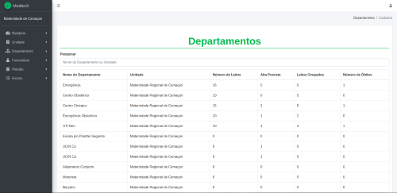

Manual do Usuário - Aplicação Medtech
1. Introdução
Bem-vindo ao sistema Medtech, desenvolvido para facilitar o gerenciamento de clínicas e hospitais. Este manual segue os princípios de Interação Humano-Computador, garantindo uma experiência acessível e intuitiva.
2. Acesso à Plataforma
Após o login bem-sucedido na plataforma, você será redirecionado para a página principal, que é composta por um menu lateral e um painel principal com widgets de fácil compreensão, permitindo que o usuário visualize informações chave de forma intuitiva.
Para acessar o sistema, siga estas etapas:
- Insira seu nome de usuário e senha.
- Clique em "Entrar".
- Se esquecer sua senha, utilize a opção "Esqueci minha senha". Você será redirecionado para uma página onde poderá inserir seu e-mail cadastrado para receber instruções de redefinição de senha.
- Se ainda não possui uma conta, clique em "Registrar-se" e siga as instruções para criar uma nova conta.
2.1 Acesso a opção "Registrar-se"
Para criar uma nova conta, siga estas etapas:
- Seus dados pessoais serão solicitados para completar o processo de cadastro.
- Insira seu nome de usuário.
- Insira seu email.
- Insira seu telefone.
- Insira seu senha.
- Clique em "Registrar-se".
Crie sua Conta
Use seu e-mail para cadastro
3. Painel Principal
O Painel Principal oferece uma visão geral da operação hospitalar, apresentando dados sumarizados sobre departamentos, funcionários, relatórios, escalas e leitos.
- Gráficos de desempenho
- Informações sobre leitos
- Relatórios rápidos
- Notificação
3.1 Departamentos Inseridos
Essa seção mostra o número total de departamentos cadastrados na unidade. A quantidade de departamentos é importante para o controle organizacional da instituição.
- Ícone: Estetoscópio.
- Legenda: Informa que 20 departamentos foram inseridos na unidade.
- Link:"Mais informações" para obter detalhes adicionais sobre os departamentos.
3.2 Relatórios Detalhados
Exibe a porcentagem de relatórios já gerados no sistema. No exemplo, 100% dos relatórios foram gerados e estão prontos para consulta.
- Ícone: Relatório.
- Legenda: 100% dos relatórios foram gerados e estão prontos para consulta.
- Link:"Mais informações" para obter detalhes adicionais sobre os relatórios.
3.3 Funcionários Cadastrados
Mostra o número total de funcionários cadastrados no sistema. Essa seção facilita o controle sobre o quadro de pessoal, ajudando na distribuição de plantões e escalas.
- Ícone: Pessoa.
- Legenda: 7 funcionários cadastrados.
- Link:"Mais informações" para obter detalhes adicionais sobre os funcionários.
3.4 Escala do Dia
Essa seção mostra a escala diária dos funcionários. Se não houver uma escala cadastrada, será exibido "0".
- Ícone: Calendário.
- Legenda: 0 escalas cadastradas.
- Link:"Mais informações" para obter detalhes adicionais sobre a escala do dia.
5. Gerenciamento de Leitos
O módulo de gerenciamento de leitos permite visualizar, em tempo real, a ocupação hospitalar, incluindo a quantidade total de leitos, os leitos ocupados e os disponíveis. Essa ferramenta é essencial para o controle eficaz da capacidade e para garantir uma gestão hospitalar eficiente.
Descrição: Este gráfico de pizza representa a ocupação dos leitos na unidade.Seções do Gráfico:
- Leito Disponível: Representado pela cor verde.
- Ocupação de Leitos: Representado pela cor vermelha.
- Leitos Livres: Representado pela cor amarela.
6. Como Gerenciar Informações
Para gerenciar informações, acesse os módulos apropriados no menu lateral e:
- Edite dados existentes.
- Atualize as informações de plantões e leitos.
6.1 Relatórios
Para gerenciar os relatórios, acesse a aba "Relatório" no menu lateral. Escolha o relatório desejado, selecione o período de tempo e os filtros desejados, e clique em "Gerar Relatório".
6.2 Unidades
Gerencie as unidades acessando o menu "Unidade", onde você pode adicionar, editar ou remover unidades hospitalares cadastradas. Para cadastrar uma nova unidade, clique em "Adicionar Unidade", preencha os campos necessários e salve.
6.3 Departamentos
Os departamentos podem ser gerenciados na aba "Departamento", onde você pode cadastrar novos departamentos e associá-los às respectivas unidades. Para cadastrar um novo departamento, clique em "Adicionar Departamento", preencha os campos necessários e salve.
6.4 Funcionários
No menu "Funcionário", você pode cadastrar e gerenciar informações detalhadas dos funcionários. Para cadastrar um novo funcionário, clique em "Adicionar Funcionário", preencha os campos necessários e salve.

6.5 Plantão
A organização dos plantões pode ser feita através da aba "Plantão". Aqui, é possível visualizar e editar os turnos de trabalho dos funcionários. Para distribuir plantões, selecione o funcionário e defina os turnos de trabalho.
6.6 Escalas
Gerencie as escalas de trabalho através da aba "Escala", onde você pode definir a distribuição dos turnos de cada funcionário. Para organizar a escala, selecione o funcionário e defina os turnos de trabalho.
7. Boas Práticas
Recomendamos manter os dados de funcionários, departamentos, escalas e leitos sempre atualizados, além de revisar os relatórios periodicamente. Essas práticas garantem a eficiência do sistema e contribuem para uma gestão hospitalar mais organizada.
8. Perguntas Frequentes (FAQ)
Como redefinir minha senha?
Caso tenha esquecido sua senha, siga estas etapas para redefini-la com segurança:
- Na página de login, clique na opção "Esqueci minha senha".
- Insira o e-mail cadastrado no sistema e confirme.
- Verifique sua caixa de entrada (ou pasta de spam) para encontrar o e-mail de redefinição enviado pelo sistema.
- Clique no link fornecido no e-mail, que o redirecionará para a página de redefinição de senha.
- Crie uma nova senha seguindo os requisitos de segurança indicados, como o uso de letras maiúsculas, números e caracteres especiais.
- Confirme a nova senha e salve as alterações.
Nota: Se não receber o e-mail dentro de alguns minutos, entre em contato com o suporte técnico através de suporte@medtech.com para assistência.
Como cadastrar um novo funcionário?
Para cadastrar um novo funcionário, siga estas etapas:
- Acesse o menu "Funcionário".
- Clique em "Adicionar Funcionário".
- Preencha os campos necessários com as informações do funcionário.
- Clique em "Salvar" para cadastrar o novo funcionário.
Como gerar um relatório?
Para gerar um relatório, siga estas etapas:
- Acesse o menu "Relatório".
- Selecione o tipo de relatório desejado.
- Defina os filtros necessários, como datas, funcionários, departamentos ou plantões.
- Clique em "Gerar Relatório".
9. Suporte
Para suporte técnico ou dúvidas, entre em contato com a equipe de suporte da Medtech pelo e-mail suporte@medtech.com. Nossa equipe está à disposição para ajudá-lo com quaisquer questões técnicas, operacionais ou relacionadas ao uso do sistema.
10. Versão do Sistema
Versão atual: 1.0.0 da Plataforma Medtech. Atualizações regulares estão disponíveis para melhorias contínuas.